library(tidyverse)
library(haven)
library(tigris)
library(rnaturalearth)
library(tidycensus)
library(ggthemes)
library(scales)
library(ggrepel)
library(viridis)
library(labelled)
statemap <- states(cb = TRUE, resolution = "20m", progress_bar=FALSE) |>
filter(NAME != "Puerto Rico") 
5 Choropleth Maps
Choropleth maps provide another form of data visualization in a univariate sense: Variation across geographic units. Examples of geographic units include U.S. states, counties, or congressional districts. Across the world, we can examine variation across countries or regions. We can also zoom in on particular continents to examine variation across countries.
5.1 U.S. Maps with the tigris Package
Many packages and sources exist for generating U.S. national map objects. A good one-stop shop, however, is the tigris package, which was created by Kyle Walker. His book, Analyzing US Census Data: Methods, Maps, and Models in R, is an invaluable resource for U.S. maps and data at numerous subnational geographic units (Walker 2023). Walker also created the tidycensus R package, which imports U.S. Census data into R, integrates that data with map object, and thus permits generation of choropleth maps using Census data.
tigris can generate U.S. national map objects, state map objects, or map objects with other subnational geographic entities. I will begin with a national map with states as the primary subnational geographic unit. The code below shows how to import a “states” map object using tigris.
In the code above, I name the state maps object “statemap.” The states() call is specifically from the tigris package. This is where users specify what subnational geographic units they want within the national map. tigris includes several such units; Chapter 5 in Walker (2023) provides a full list. Table 5.1 below gives some examples.
| Geographic Subdvision | tigris Call |
|---|---|
| States | states() |
| Counties | counties() |
| Congressional Districts | congressional_districts() |
| Census Tracts | tracts() |
| School Districts | school_districts() |
For example, to generate a national map with congressional districts instead of states, one would simply use the same code above but replace states with congressional_districts.
The code also contains some other specifications. Users should always specify cb=TRUE; “cb” stands for “cartographic boundaries,” which gives a more generalized maps object that one would be used to seeing.1 This setting is suitable for almost all applications in academic research or for general visual display. With cb=TRUE, users can also specify three resolution options: 500k (the default), 5m, or 20m. With cartographic boundaries giving more generalized boundaries, the resolution regulates just how generalized. Higher values (with 20m being the highest) means more generalized boundaries and also smaller file sizes. For national maps, 20m setting is suitable. For display in an article or document, the combination is cb=TRUE, resolution=20m is optimal.
Readers will also notice that I include progress_bar=FALSE. This command is not crucial for the look of one’s map; it is primarily for hiding some of the messages tigris gives us. Finally, by default, tigris includes Puerto Rico in national maps. If I want a map of the 50 states only, I use piping to remove Puerto Rico. The “NAME” variable in the maps object includes the names of the states.
5.1.1 “Simple Features” (sf) Maps Objects are the Standard
Once we load the maps object, which I have named “statemap,” we can check the class of the object.
class(statemap)[1] "sf" "data.frame"Note that we get two entries: “sf” and “data.frame.” Importantly, “sf” stands for “simple features”, which is a specific designation for a maps object using this “gold standard” which users call “simple features.” When users view a maps object, they will see that there are the 50 observations, one for each geographic entity (states in this example, of course). The last column is called “geometry” and includes all of the spatial information for each geographic entity, which is required to draw geographic border lines. The “data.frame” aspect means that this object is a hybrid object: It is a “maps object” and a dataset. It has variables in it, and one could merge external data into this object. This chapter will exclusively use “sf” objects, which again is now the gold standard for mapmaking in R.
For background, the forerunner to simple features was the “spatial polygons” (“sp”) approach, which was much messier. The maps objects contained tons of observations for each geographic entity for latitude and longitude values.
5.1.2 Making the Map Presentatble for Data Visualization
Below, I generate a simple map from the object I generated from tigris. Note that I will exclusively use ggplot for making maps in this chapter. Other packages and commands exist including leaflet and mapview, which can generate interactive maps, and tmap, which performs similarly to ggplot. For political science research, I have found that ggplot is optimal for generating the best data visualizations for choropleth maps.
The critical geometry for mapmaking in ggplot is geom_sf(), where once again, the “sf” stands for “simple features.”
ggplot(statemap) + geom_sf()
Yikes, at this point, you might be saying, “This is what mapmaking looks like in R?!” First, the map places Alaska and Hawaii in their correct geographic locations. Since this a graph, we see latitude on the y-axis and longitude on the x-axis. The map stretches way out east because by default, the map includes all U.S. territories (including the Northern Mariana Islands and Guam way out east).
To fix this problem, the tigris package includes a setting called shift_geometry(), which places Alaksa and Hawaii in the lower left portion like users are accustomed to seeing in national maps. Political scientists will sometimes include only the contiguous 48 states in their maps, most likely because they are not using tigris and this useful feature but instead another maps package that only grabs the contiguous 48. Such a map with just 48 states is unacceptable, particularly since the tigris solution is so easy to implement. The code below implements this code:
statemap <- states(cb = TRUE, resolution = "20m") |>
filter(NAME != "Puerto Rico") |>
shift_geometry()
statemap |>
ggplot() + geom_sf() 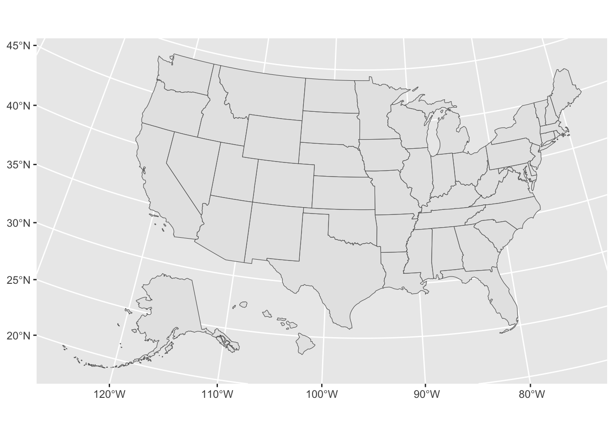
Now we observe a very visually pleasing national map that includes all 50 states. To remove gray background and the x and y axes, we can use theme_void() within ggplot.
statemap |>
ggplot() + geom_sf() +
theme_void()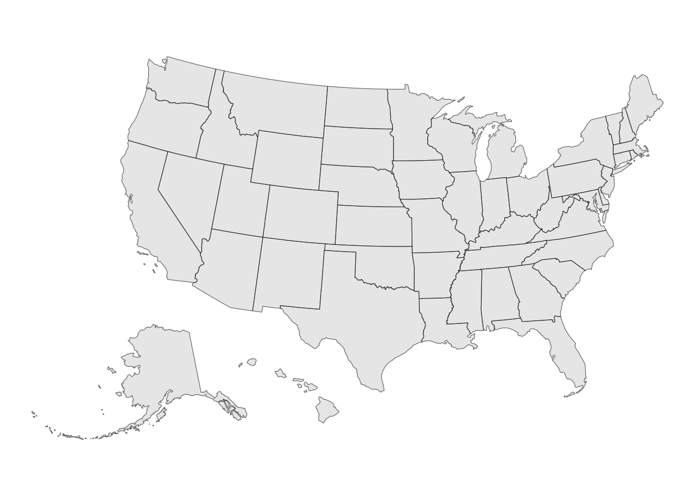
Another theme option, which requires one loading the ggthemes package, is theme_map():
statemap |>
ggplot() + geom_sf() +
theme_map()
One might notice that the theme_map makes the border lines someone thinner by default compared to theme_void. The major differences in these maps is how they handle the legend in a choropleth map, which I will discuss further below.
Since this is a ggplot “graph,” we can change the border lines and teh fill color just like we did in, e.g., bar graphs from Chapter 4. Here, I could change the fill color to blue:
statemap |>
ggplot() +
geom_sf(fill="dodgerblue") +
theme_void()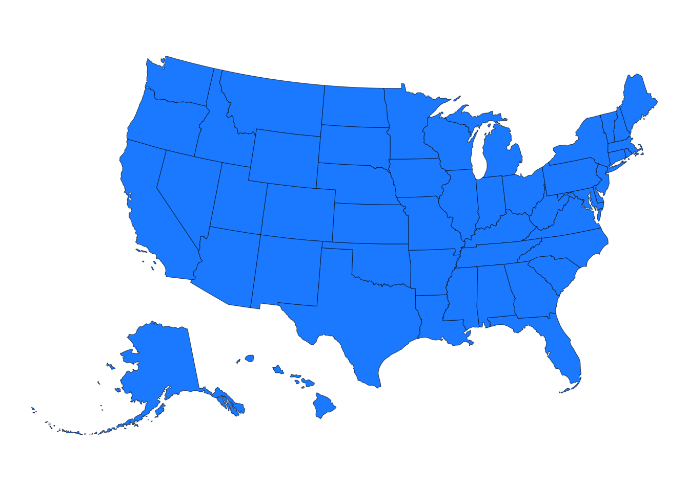
I could also change the border line color to white:
statemap |>
ggplot() +
geom_sf(fill="dodgerblue", color="white") +
theme_void()
I can also change the state border line width:
statemap |>
ggplot() +
geom_sf(fill="dodgerblue", color="white", linewidth=.8) +
theme_void()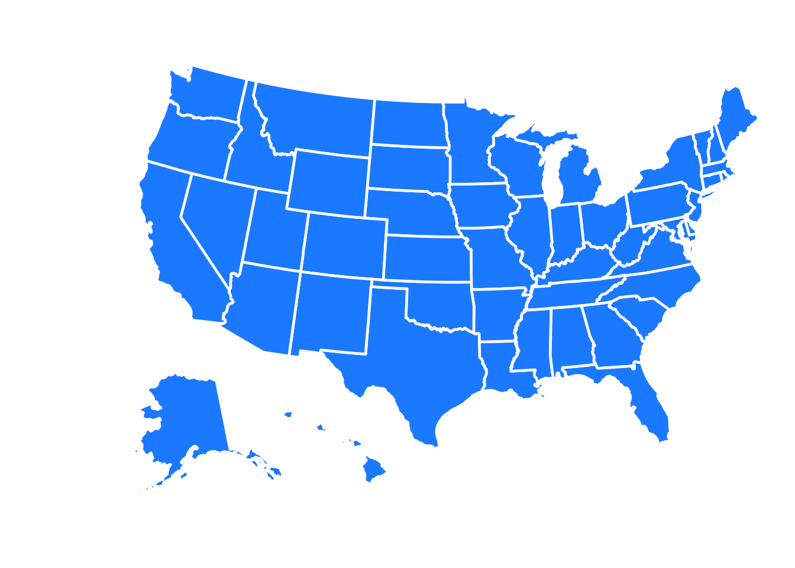
5.1.3 Choropleth Maps with a Binary fill Variable
Because a choropleth map is color-coded map based on some variable, one might envision that the fill= command used above is going to be key specification that makes a choropleth map a choropleth map. In a choropleth map, we will tell ggplot to make the fill color differ by geographic units as a function of values of a specific variable.
Let’s start with a very simple choropleth map based on the 2024 election. Here, we will generate a “red v. blue” map based on which candidate, Donald Trump or Kamala Harris, won each state. The “statemap” object we imported from tigris has a few state-specific variables in it, but it does not, of course, contain an indicator of on which candidate won each state in the election. Thus, we we will need to merge an external dataset into this “statemap” object. The following “states24.csv” dataset is perect for our purposes. It contains a variable called “winner,” which equals “Harris” for states Harris won and “Trump” for states Trump won. The varible is a “character” variable, and recall that ggplot treats these variables like “factor” variables (discrete, unordered). I will revisit this important issue below, as once again, the user must be attuned to the level of measurement for the fill (or choropleth) variable.
states24 <- read_csv("https://blbartels.github.io/dataps/states24.csv")Now I need to merge this “states24” dataset with my maps object, “statemaps” using the techniques from Chapter 3. Importantly, in the merging context, the maps object, “statemaps,” is the master dataset, while the “states24” dataset is the merging or using dataset. I will use the method of matching state variable names across datasets. The state identifier in “states24” dataset (the merging dataset) is called “state_name.” The state identifier in “statemaps” is called “NAME.” Recall from Chapter 3 that when one merges two datasets, the merging variable (here, “NAME”) must have exactly matching values of that variable (e.g., “Maryland” matches exactly between the two). This issue rarely arises wit states data because the state names are straightforward. But users should always verify that the values of the variable match between the two datasets being merged together.
Using this method, I need to change the state identifier variable in the merging dataset, “states24,” to “NAME” using the following command:
states24 <- states24 |> mutate(NAME=state_name)The rest is easy. I simply merge this “states24” dataset into the maps object, “statemap,” using the left_join command discussed in Chapter 3. Once again, the “direction” of this merge is critical. If I instead merged the maps object into my states24 dataset, I would lose all of the geographic information (the “geometry” column) that is necessary for generating the map. The following command performs the merge:
statemerge <- statemap |> left_join(states24)Joining with `by = join_by(NAME)`class(statemerge)[1] "sf" "data.frame"Two quick observations: First, the message from left_join confirms that the datasets were joined by the variable “NAME.” Second, the “class” of this newly merged dataset (“sf” and “data.frame”) confirms that it is a hybrid maps object and dataset from which we can generate maps.
The ggplot command below generates the first choropleth map of this chapter. Recall that the fill specification is what explicitly makes a choropleth map. Here, unlike previously where I merely changed the fill color to blue, I set fill as a function of the variable, “winner.” Because that is changing the underying infrastructure of the map, the fill = winner line goes within the aesthetic. Note that this line could also go within the geom_sf parentheses; examples further below will show where I actually want to place it there instead of within the ggplot parentheses.
In addition to fill, the other critical feature of a choropleth map is the scale_fill_ command. This sets the color scheme for the choropleth map. My use of scale_fill_manual() in this context is directly tied to: (1) the level of measurement of my fill variable, “winner”, and (2) the “class” of my fill variable. In this case, “winner” is definitely a factor variable, given it is a character variable. It is also a “nominal” variable in the sense that it is discrete with no order (though the order is imposed by Democrat versus Republican). For a nominal variable like this one with just two categories, scale_fill_manual is optimal because we can just set the colors manually. Note the syntax for setting the colors (within the column vector, c()). The order of the colors matters and corresponds to the order of the values of the variable, which are in this case “Harris” and “Trump.” For a character variable, the order that matters is alphabetical order. Since Harris comes before Trump, the first blue entry corresponds to Harris, and the second red entry corresponds with Trump.
a <- statemerge |>
ggplot(aes(fill = winner)) +
geom_sf(color = "gray90", linewidth=.2) +
scale_fill_manual(values = c("dodgerblue2", "red3")) +
theme_void() +
coord_sf(expand=FALSE) +
labs(fill = "",
title = "2024 U.S. Presidential Election Results by State\n",
caption = "Note: Nebraska and Maine split electoral college votes by congressional district") +
theme(plot.title=element_text(face="bold", size=12, hjust=.5),
plot.caption = element_text(size=10),
legend.position = c(0.70, 0.1),
legend.direction = "horizontal",
legend.text = element_text(size = 8))
a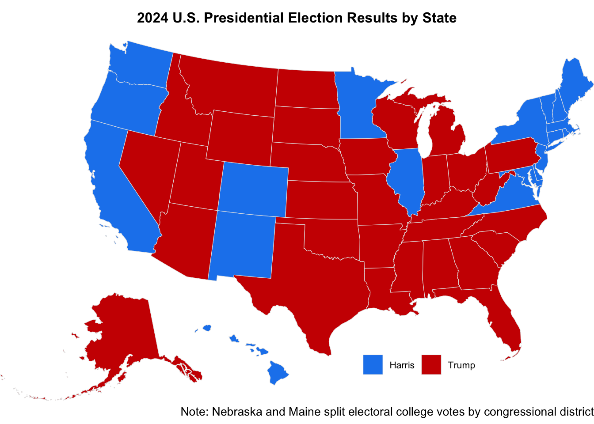
By default, theme_void() places the legend to the right of the map. Because the shrinks the size of the map, I like to place the legend below the map. One can use the same legend.position settings we used in Chapter 4 (e.g., “bottom”). We can also place the legend in a particular place using the command I use above. Here, 0.70 means place it 70% of the way to the right, while 0.1 means place it 10% of the way from the bottom. Users can use trial and error to find the right placement for their map. The setting for legend.direction says to make the legend horizontal (from left to right). Setting this to “vertical” stacks the names on top of each other. One other setting I use here is that I save the graph as object “a” and then “display” that object. I do this for “coding efficiency” purposes because I will be adding some features below, but I want map “a” to be the baseline. This is a common ggplot technique to save users from having to type the code over and over again.2 One other command I use in this and future maps is coord_sf(expand=FALSE). By default, RStudio will place a padding around the map, making it appear smaller than it appears here. This setting removes that padding and makes the map look a bit larger.
I can also add state labels inside the map using the two-letter state abbreviations (“STUSPS” in the maps object). The code below uses the geom_text feature I introduced at the end of Chapter 4. Note I simply add this option onto object “a” (the baseline graph) from above. Since the label is variable that changes across states, the label = STUSPS goes inside an aesthetic. Also inside the aesthetic is a geometry command, which tells ggplot where to locate the labels. Here, I specify the “geometry” variable, which, recall, is the key variable in an “sf” maps object that specifies the spatial location. Outside the aesthetic, stat = "sf_coordinates" places the label in the middle of the geographic area. Users can experiment with different size options and colors for the text of the label.
a + geom_text(aes(label = STUSPS, geometry = geometry),
stat = "sf_coordinates", size=2, color="white")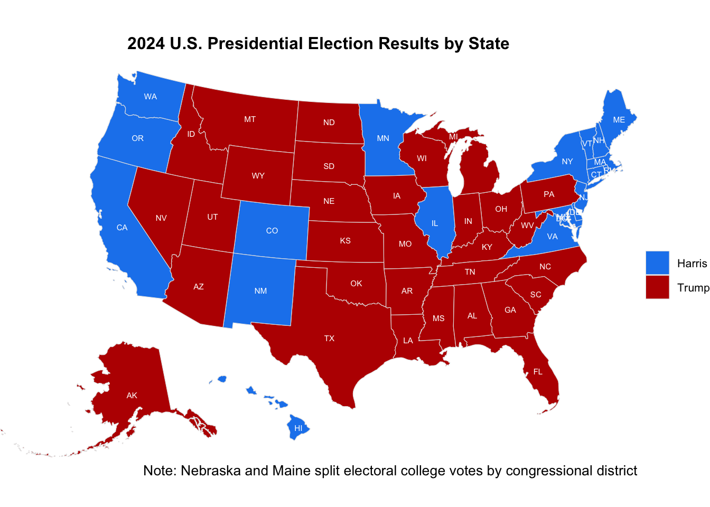
On the whole, the labels look visually pleasing. However, the map highlights the “Northeast problem”: Smaller states where one cannot read the labels. However, we can use ggrepel to fix the problem (and users can experiment with aspects of these features in greater detail). The first geom_text command uses the if_else() command we have used for generating and recoding new variables (Chapter 3) for a conditional labeling command. The code says to code states where are no problems with unreadable labels the same as before. But omit the five problem states (including DC) from the original labeling procedure; leave them blank (""). Then, the next command tells ggplot to use ggrepel instead for the labels. I change the font to black because some end up in the Atlantic ocean. The other options regulate the arrow and stem (of the arrow) length.
a + geom_text(aes(label = ifelse(STUSPS %in%
c("RI", "DC", "MD", "DE", "NJ"), "", STUSPS),
geometry = geometry),
stat = "sf_coordinates", size=2, color="white") +
geom_text_repel(aes(label = ifelse(STUSPS %in%
c("RI", "DC", "MD", "DE", "NJ"), STUSPS, ""),
geometry = geometry),
stat = "sf_coordinates", size=2, color="black",
min.segment.length = 0, # Forces the arrow to appear
segment.color = "black", segment.size=.3,
arrow = arrow(length = unit(0.01, "npc")),
box.padding = .4)5.1.4 Levels of Measurement, Scale Types, Colors, and Palettes
We began with a simple choropleth map with a binary (Harris v. Trump) fill variable. Once we begin using fill variables that are ordinal or interval, we need to be more attuned to issues of color schemes and palettes. Once again, the fill variable’s level of measurement will determine how one specifies the class of the fill variable and also the specific scale_fill_ that we use in the ggplot command. These factors, in turn, influence the entire look of a choropleth map. Table 5.2 summarizes these issues and shows options for scale_fill_ based on the fill (or choropleth) variable’s level of measurement. We have discussed nominal variables, where we would almost always to use scale_fill_manual and define the colors ourselves (though see discussion below about “qualitative palettes”).
For ordinal fill variables, we almost always want to specify those variables as “factor” variables in the fill command. That’s because we want to acknowledge the discrete categories in the ordinal variable. There may be conditions under which we would want to treat an ordinal choropleth variable as “numeric” and interval instead, particularly in cases where an ordinal variable has several categories (e.g., think back to six-point approval scale regarding approval for the Supreme Court’s immunity decision from Chapter 4).
| Level of Measurement | fill Variable Class |
Scale type for fill variable |
|---|---|---|
| Nominal | factor |
scale_fill_manual |
| Ordinal | factor |
scale_fill_manual, scale_fill_brewer, scale_fill_viridis_d |
| Interval | numeric |
scale_fill_distiller, scale_fill_viridis_c, scale_fill_gradient, scale_fill_gradient2 |
5.1.5 Choropleth Maps for Oridinal fill Variables
The example I will give below is the cost of living in the states, which has political implications for policy preferences and potential vote choice in elections. The fill variable I will use is a four-point ordinal measure — “coi_rating” in the states24 dataset — with the following values:
- 0 = Low cost living
- 1 = Below average
- 2 = Above average
- 3 = High cost of living
In RStudio, the class of the “coi_rating” variable is numeric. The nature of this ordinal variable puts me in the second row of Table 5.2: I should specify this fill variable as a factor (since its class is numeric), and I will explore the use of scale_fill_brewer and scale_fill_viridis_d. These latter two options will allow me to specify a palette that will automatically assign colors to the four values of the ordinal variable. The palette options for scale_fill_brewer are available at the R Graph Gallery. The viridis palette options are available at the R Cran website (among other places).
The code below implements this strategy first using scale_fill_brewer. Note that I define value labels in the dataset first and then use the as_factor() procedure (discussed in Chapter 4) for having ggplot display those value labels in the legend instead of the numeric values.
statemerge <- statemerge |>
set_value_labels(coi_rating=c("Very low"=0, "Below avg."=1, "Above avg"=2,
"Very high"=3))
a <- statemerge |>
ggplot(aes(fill = as_factor(coi_rating))) +
geom_sf(color = "black", linewidth=.1) +
coord_sf(expand=FALSE) +
theme_void() +
theme(plot.title=element_text(face="bold", size=12, hjust=.5),
plot.caption = element_text(size=10),
legend.position = "bottom",
legend.direction = "horizontal",
legend.text = element_text(size = 8))
a + scale_fill_brewer(palette ="YlGnBu") +
labs(fill="Cost of Living",
title = 'Cost of Living (Brewer, "YlGnBu")\n')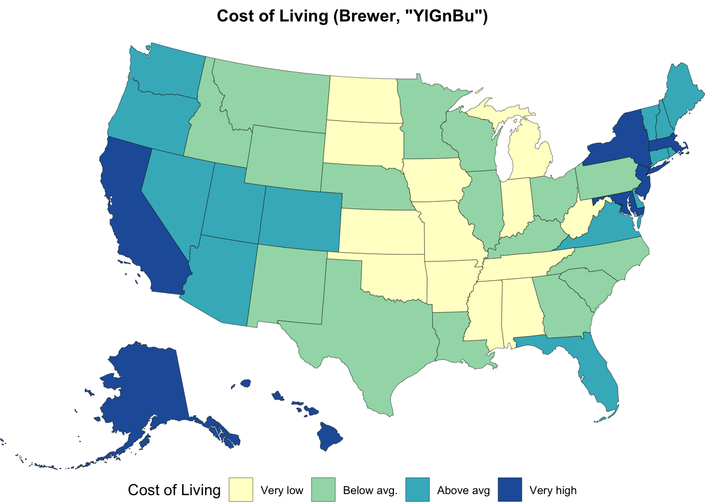
This first map uses the brewer “YlGnBu” palette again. The variation in the colors going from light to dark corresponds to the variation in the cost of living variable moving from low to high. As I formalize further below, matching the direction of the palette to the variable is a must when making choropleth maps. Also, when choosing palettes, color contrast is key. For this ordinal variable, this palette nicely contrasts the two lower values — yellow and greenish-yellow — from the two higher values — greenish-blue and darker blue. The contrats makes the pattern in the map pop. For instance, we tend to see higher costs of living on the coasts, particularly in the West and in the mid-Atlantic to the Northeast. The lowest costs of living are in the middle of the country, stretching from South to the Midwest. Alaska and Hawaii also have very high costs of living.
Users will want to experiment with different palettes to see which maximizes the type of data visualization they think is most important to convey. The next map uses the “Greens” palette from brewer.
a + scale_fill_brewer(palette ="Greens") +
labs(fill="Cost of Living",
title = 'Cost of Living (Brewer, "Greens")\n')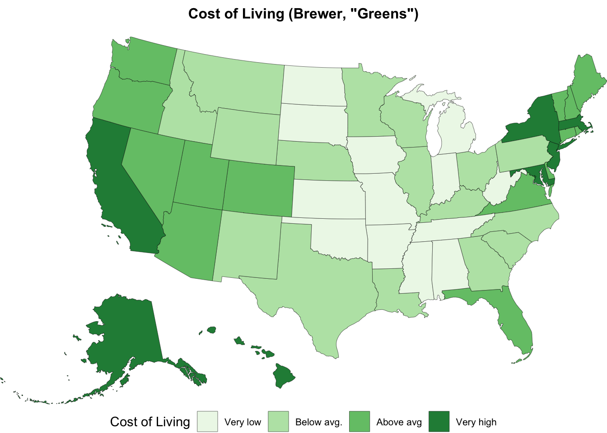
Like the last palette, color variation corresponds to variation in the choropleth variable. However, this palette does not provide the sort of sharp distinction between categories that the last one did. The shades of green between the second and third categories are not that different from each other. But the map does show highlight the high cost of living areas like the prior map did.
The next map uses the viridis package and also the default “viridis” palette. Note that when using scale_fill_viridis_d, one uses “option” instead of “palette” inside the parentheses.
a + scale_fill_viridis_d(option="viridis") +
labs(fill="Cost of Living",
title = 'Cost of Living (Viridis, "viridis")\n')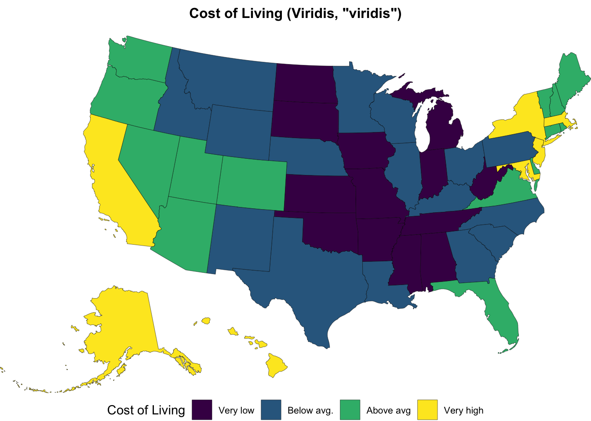
Two observations to note with this map: First, the colors in the viridis palettes are known to be bold — they definitely pop. As discussed, they are also known to be colorblind accessible, making them an attractive option for accessibility purposes. Second, the variation in the color palette runs from dark (very low) to light (very high). Recall my practice of matching palette variation and the choropleth variable’s direction of variation. Thus, I want to flip the palette so it runs from light (yellow) to dark (dark purple). The command below does just that by changing the “direction” of the palette; I set that to -1.
a + scale_fill_viridis_d(option="viridis", direction=-1) +
labs(fill="Cost of Living",
title = 'Cost of Living (Viridis, "viridis", Direction = -1)\n')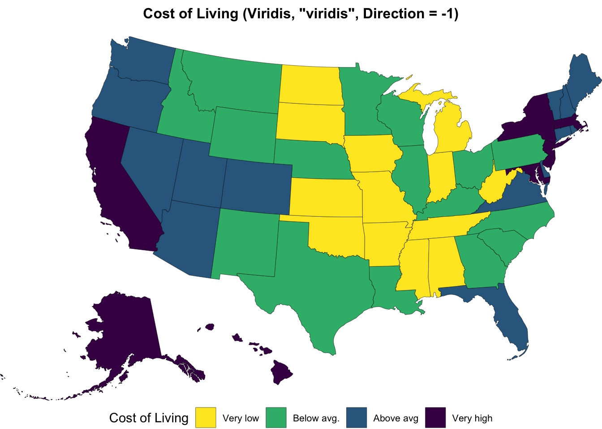
Now the map’s palette matches the direction of the cost of living variable. This palette is similar to brewer’s “YlGnBu” in that it sharply distinguishes the bottom two categories from the top two categories. The map nicely distinguishes the higher cost of living in the West and Northeast from the lower cost of living in the middle of the country and the South, with the exception of Florida, which is on the higher end.
Finally, I include another viridis palette, “cividis,” which again relies on yellow at the low end. It uses a tan to dark navy blue from there.
a + scale_fill_viridis_d(option="cividis", direction=-1) +
labs(fill="Cost of Living",
title = 'Cost of Living (Viridis, "cividis", Direction = -1")\n')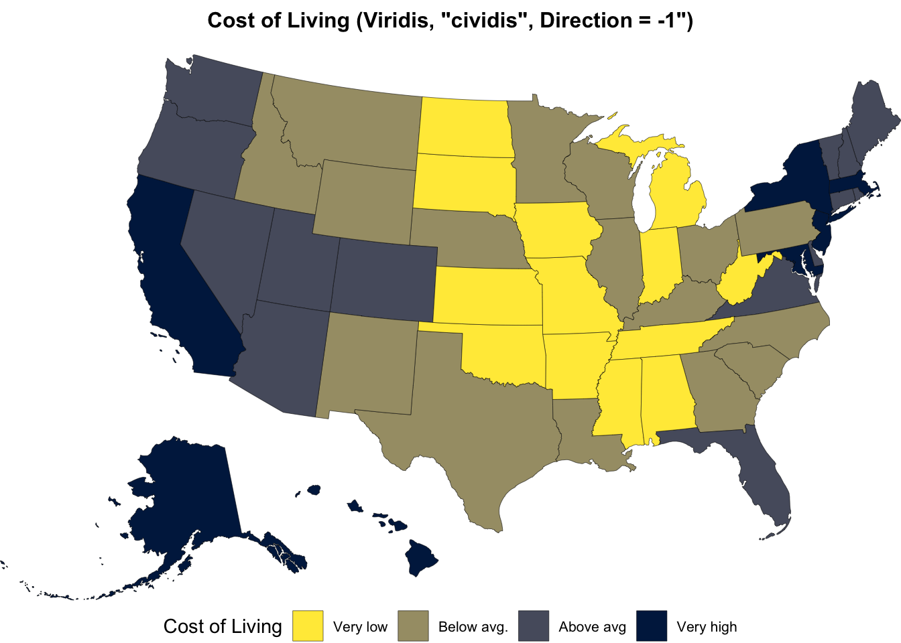
Once again, the viridis palettes use very bold colors and contrasts, which can highlight the patterns in the map concerning geographic variation.
5.1.6 Choropleth Maps for Interval fill Variables
For interval fill variables, Table 5.2 lists a number of different palette options. Given the continuous nature of these variables, we will always specify them in the fill() command as numeric variables. I have already discussed some of the important aspects of palettes for ordinal variables. Once we move to interval choropleth variables, researchers and users must be especially attuned to some specific features of the palettes. I now formalize discussion of three different palette types that exist for interval fill variables that these scale_fill_ options in Table 5.2 can accommodate:
Sequential palettes: The palette colors range from light to dark, which should coincide with low to high variation in the choropleth variable. The palettes I used in the ordinal cost of living example were sequential. They key variation is from a light color (low end of the spectrum) to a dark color (high end of the spectrum).
Diverging palettes: Here, the key variation in palette colors goes from the “middle out” (like the seven-point party identification example in Chapter 4). For example, there may be light colors in the middle, and variation from the “middle up” gets increasingly dark in one color (e.g., red), while variation from the “middle down” gets increasinly dark in another color (e.g., blue). These palettes are useful when the researcher wants to illustrate variation relative to some middle value.
Qualitative palettes: These palettes do not have an ordering one way or another. These could actually work for nominal variables where there’s no “light-to-dark” ordering in the palette. The benefit of using qualitative palettes is that “someone else” (who also spends much more time thinking of optimal palette colors) picks the colors for you. Many of these color options are highly accessible to, e.g., those who are colorblind. The
viridispackage brands itself as highly color-blind accessible. On the other hand, like in the Harris versus Trump example, researchers will often have colors in mind that they want to use, so the manual setting is sometimes preferable.
I begin with a straightforward sequential palette example using the states data. The map below shows variations in voter turnout in the 2024 presidential election. Recall how we visualized this data in Section 4.2.6, where I rank ordered states from highest to lowest. This map is the choropleth analogue to that data visualization. Note also that I can use the labels=percent setting from the scales package. That displays percentage signs in the legend; recall that in the fill command, I need to divide turnout by 100 because turnout is coded in percentage terms (e.g., 56.7, 74.3), yet labels=percent converts a proportion (0.567, 0.743) to a percentage (56.7%, 74.3%). I also set the limits and ranges of the legend.
a <- statemerge |>
ggplot(aes(fill = turnout/100)) +
geom_sf(color = "black", linewidth=.1) +
coord_sf(expand=FALSE) +
theme_void() +
theme(plot.title=element_text(face="bold", size=12, hjust=.5),
plot.caption = element_text(size=10),
legend.position = "bottom",
legend.direction = "horizontal",
legend.text = element_text(size = 8))
a + scale_fill_distiller(limits = c(.5, .77),
breaks = seq(.5, .75, .1),
labels=percent, palette ="YlGnBu", direction=1) +
labs(fill="Turnout",
title = '2024 Election Turnout (Brewer [Distiller], "YlGnBu")\n')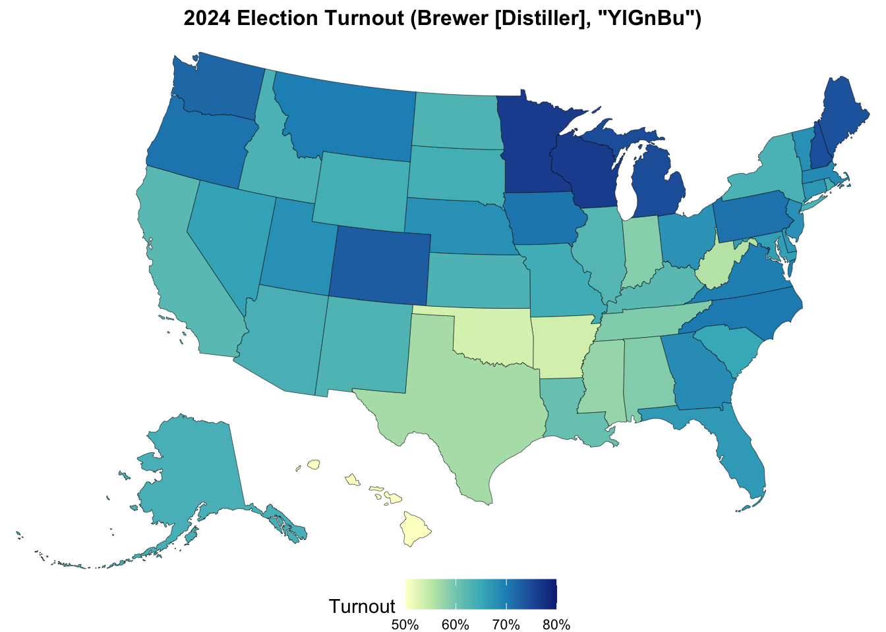
In terms of interpreting geographic variation in turnout, the map does not show any glaring regional patters. The palette nicely distinguishes the low turnout states (HI, OK, AR, WV) from the high turnout states (MN, WI, MI, ME, NH, CO). Indeed, one interesting interpretation from this map is the lack of “clustering” that we sometimes see in these types of maps, where groups of states close together tend to exhibit similar patterns.
Sticking with the states data, I now move to an interesting use of diverging palettes to analyze the 2024 versus the 2020 presidential election outcomes. Because the Electoral College determines the winner of the presidential election, candidates need to win states, of course. The candidate who wins a particular state gets all of those electoral votes.3 Because of the nature of our state-centered electoral system for choosing a president, campaigns and the media naturally focus on “battleground states” — states that either candidate could plausibly win. Ideally, in a competitive election, all states would be up for grabs, but that is not how it unfolds in the U.S. A Democrat will never win Wyoming, West Virginia, or Alabama; a Republican will never win California, New York, Maryland, or Washington State.
As a matter of fact, contemporary presidential elections come down to just six or seven battleground states, or “swing states,” in which candidates spend much of their time campaigning for votes. The map below helps us visualize what were the most competitive states in the 2024 election. Here, I use the states data and create a “margin of victory” variable that is amenable to a diverging palette for a choropleth map. The “margin” variable equals the percentage of the votes Trump won minus the percentage of the votes Harris won in each state. Once again, I divide this margin by 100 because labels=percent (from scales) will convert a proportion to a percentage. Increasing values of this variable in the positive direction represent an increasing margin of victory for Trump. Increasing values in the negative direction represent an increasing margin of victory for Harris.
The critical aspect of the palette is the middle value of zero, which theoretically represents a tie between the two candidates. Of course, a tie never occurs, but values very close to zero will give give us a sense of which states were the most competitive, i.e., which were the true battleground, swing states. Dark red and dark blue states are uncompetitive states that the other side had no chance of winning. This example highlights the value of a diverging palette in communicating variation from the “middle out.” The middle (zero) represents competitive states. Variation from the middle up represents an increasing Trump advantage (and an increasing lack of competitiveness). Variation from the middle down represents an increasingly Harris advantage (and an increasing lack of competitiveness).
I use scale_fill_gradient2() to specify the diverging palette. The syntax is simple. I simply specify low (blue) and high (red) colors that correspond to large negative and large positive values, respectively. I also specify the critically important middle color (white) and the midpoint (in this case, zero) that should correspond to this middle color. One important note is that omit DC from this analysis, as it is extreme outlier (Harris won 90%, Trump won just 7%), which makes the legend scale unwieldy. Users could experiment with ways to “cap” extreme values (e.g., greater than 40% margin) so that the legend values are more balanced. On the other hand, we do want to observe some of these more lopsided states.
statemerge |>
mutate(margin = (trumppct - harrispct)/100) |>
filter(STUSPS != "DC") |>
ggplot(aes(fill = margin)) +
geom_sf(color = "black", linewidth=.1) +
scale_fill_gradient2(low = "dodgerblue2", mid = "white", high = "red3",
midpoint = 0, label=percent) +
labs(fill="Margin",
title = '2024 Election Margins (`scale_fill_gradient`, Diverging)\n') +
coord_sf(expand=FALSE) +
theme_void() +
theme(plot.title=element_text(face="bold", size=12, hjust=.5),
plot.caption = element_text(size=10),
legend.position = "bottom",
legend.direction = "horizontal",
legend.text = element_text(size = 8)) +
geom_text(aes(label = ifelse(STUSPS %in%
c("NV", "AZ", "GA", "PA", "WI", "MI", "NC"), STUSPS, ""),
geometry = geometry),
stat = "sf_coordinates", size=2.5, color="black")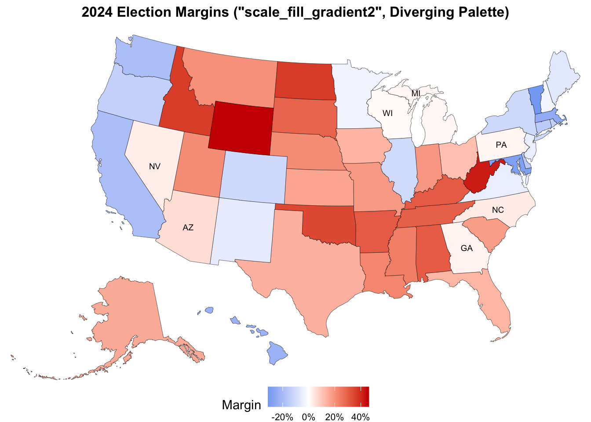
Note also that I label the seven core “battleground states” that the media and the campaigns tended to emphasize. Since the map emphasizes “middle out” variation, the states with the whitest shades were the most competitive states. These include in particular WI, MI, PA, GA, and NV. Those were indeed five of the states that the media cast as swing states. AZ and NC were also in this mix, yet you can see that AZ in particular is the “least white” among the bunch of seven. Pundits and analysts debate why one candidate beat the other based on economic conditions, candidate characteristics, and which candidate was more attractive the small share of true independents. Trump was able to capitalize on not only winning the balance of swing states but winning every single swing state in 2024. Below, I once again display the map showing which candidate won each state in 2024.
Comparing these results to the 2020 election, Joe Biden was able to do the same that Trump did in 2024 (and that Trump also did in 2016). The map below shows an analogous margin of victory for Biden versus Trump in the 2020 election.
The map recaps just how close the election was in 2020, in particularly just how close the margins were in the battleground states. NV, AZ, WI, PA, and GA in particular are very white, and NC and MI are close behind.
statemerge |>
mutate(margin = (trumppct20 - bidenpct20)/100) |>
filter(STUSPS != "DC") |>
ggplot(aes(fill = margin)) +
geom_sf(color = "black", linewidth=.1) +
scale_fill_gradient2(low = "dodgerblue2", mid = "white", high = "red3",
midpoint = 0, label=percent) +
labs(fill="Margin",
title = '2020 Election Margins (`scale_fill_gradient`, Diverging)\n') +
coord_sf(expand=FALSE) +
theme_void() +
theme(plot.title=element_text(face="bold", size=12, hjust=.5),
plot.caption = element_text(size=10),
legend.position = "bottom",
legend.direction = "horizontal",
legend.text = element_text(size = 8)) +
geom_text(aes(label = ifelse(STUSPS %in%
c("NV", "AZ", "GA", "PA", "WI", "MI", "NC"), STUSPS, ""),
geometry = geometry),
stat = "sf_coordinates", size=2.5, color="black")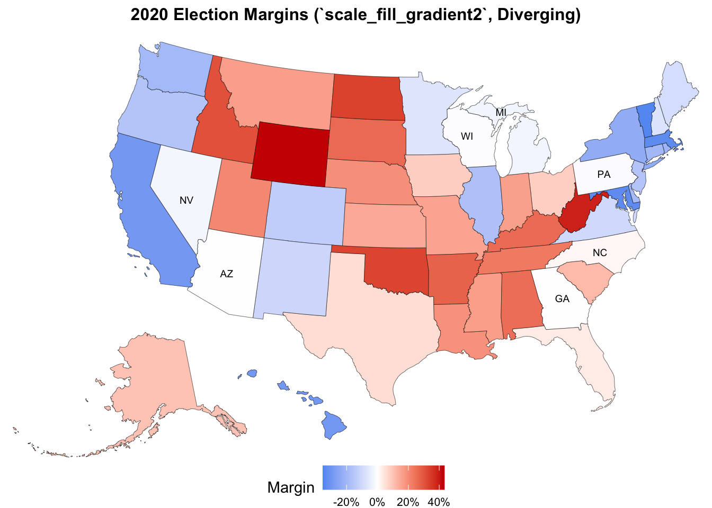
Like Trump in 2024, Biden capitalized on winning most of these states — all but NC. The map below shows which candidate won each state in 2020. The comparison highlights a fascinating dynamic in recent presidential elections (2016, 2020, and 2024): The winning candidate tends to win most or all of the battleground states but by very small margins.
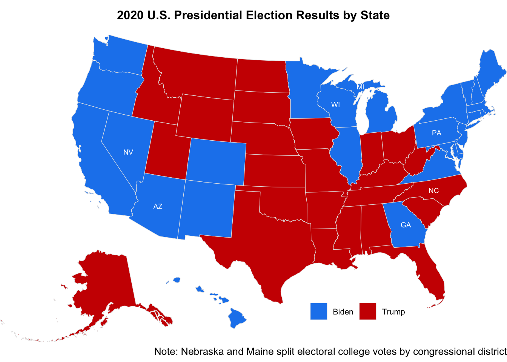
I now move to an example using an interval choropleth variable but at the county level. The U.S. has over 3,000 counties, some of which are quite large in population or land mass, and some of which are either small in land mass or have very low populations. Another subnational level that has generally similar populations (by law) is the congressional district level.
Below, I generate a choropleth map showing variation in median household income across U.S. counties. The data are based on five-year American Community Survey (ACS) estimates from the Census. Specifically, the measure is the median household income in each county. Recall that analysts will always report median (instead of mean) values of such income variables because of the well-known positive skew that accompanies income variables.
The code below first imports a counties maps object from tigris using the counties() call (see Table 5.1). I retrieved the census data on median income from the tidycensus package, which I encourage users to install and use.4 The second command loads that data, and then the third command merges the median income data into the counties maps object. Note that I place the legend to the right side of the plot, which shrinks the map sizewise relative to placing the legend below the map.
countymap <- counties(cb=TRUE, resolution="20m",
year="2024", progress_bar=FALSE) |>
filter(STATEFP != 72) |>
shift_geometry()
co_med_inc <- read_csv("https://blbartels.github.io/dataps/co_med_inc.csv")
countymerge <- countymap |> left_join(co_med_inc, join_by(GEOID==GEOID))
countymerge |>
ggplot(aes(fill = estimate)) +
geom_sf(color = "black", linewidth=.1) +
scale_fill_distiller(labels=dollar, palette ="YlGnBu", direction=1) +
labs(fill="Med. HH. Inc.",
title = 'Median Household Income (Brewer [Distiller], "YlGnBu")\n') +
coord_sf(expand=FALSE) +
theme_void() +
theme(plot.title=element_text(face="bold", size=12, hjust=.5),
plot.caption = element_text(size=10),
legend.title = element_text(size=10),
legend.text = element_text(size = 8))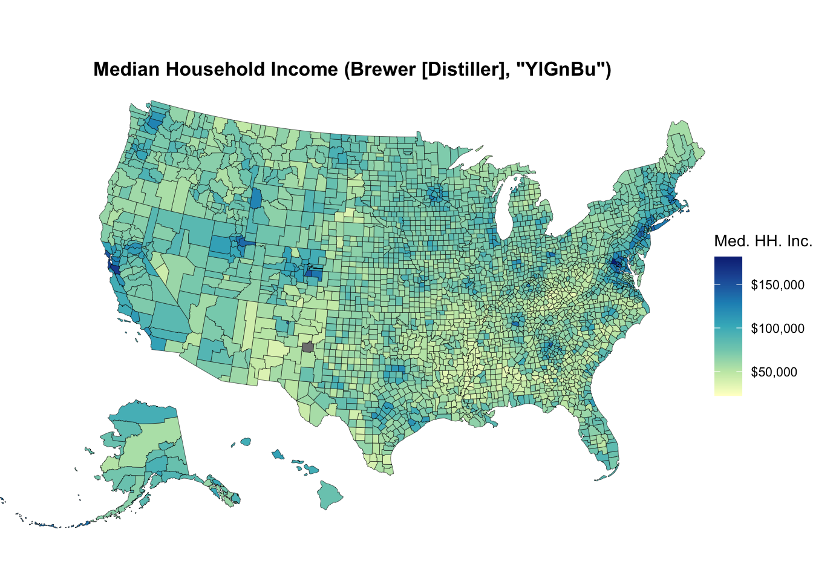
This first map uses the brewer “YlGnBu” palette (sequential). The map highlights regional patters of low and high household income. The mid-Atlantic and Northeast have clusters of dark blue indicating high household income. Large parts of Appalachia and into the Southeast have swaths of yellow, indicating lower median income. Counties are geographically larger in the most the West. In many parts of the West, population density is low.
One aspect that is missing from this map is state lines. Without state lines, users may have a hard time visualizing where in particular to place the patterns they observe. Providing state lines facilitates both within-state and across-state variation in income. The graph places state lines on the map. Note that the syntax actually incorporates two map objects: the counties object and the states object. Once again, I use piping based on the countymerge maps object. The first geom_sf call is connected to this dataset specified in the piping. The second geom_sf command brings in the “statemap” object that we imported earlier from tigris. Since this second geom_sf command needs to be distinct from the first, I have to specify the data object in that second geom_sf. Note also that when users bring in a second data object like this, they need to specify data=statemap as opposed to the shortcut of merely statemap I discussed in Chapter 3. Moreover, in this and remaining maps, I move the legend to the bottom of the map. I use a special labeling option, label_dollar(), to change the dollar format to, e.g., $100k instead of $100,000.
countymerge |>
ggplot(aes(fill = estimate)) +
geom_sf(color = "black", linewidth=.05) +
geom_sf(data=statemap, fill=NA, linewidth=.2) +
scale_fill_distiller(labels=label_dollar(scale_cut = cut_short_scale()),
palette ="YlGnBu", direction=1) +
labs(fill="Med. HH. Inc.",
title = 'Median Household Income (Brewer [Distiller], "YlGnBu", Sequential)\n') +
coord_sf(expand=FALSE) +
theme_void() +
theme(plot.title=element_text(face="bold", size=12, hjust=.5),
plot.caption = element_text(size=10),
legend.position = "bottom",
legend.direction = "horizontal",
legend.title = element_text(size=10),
legend.text = element_text(size = 8))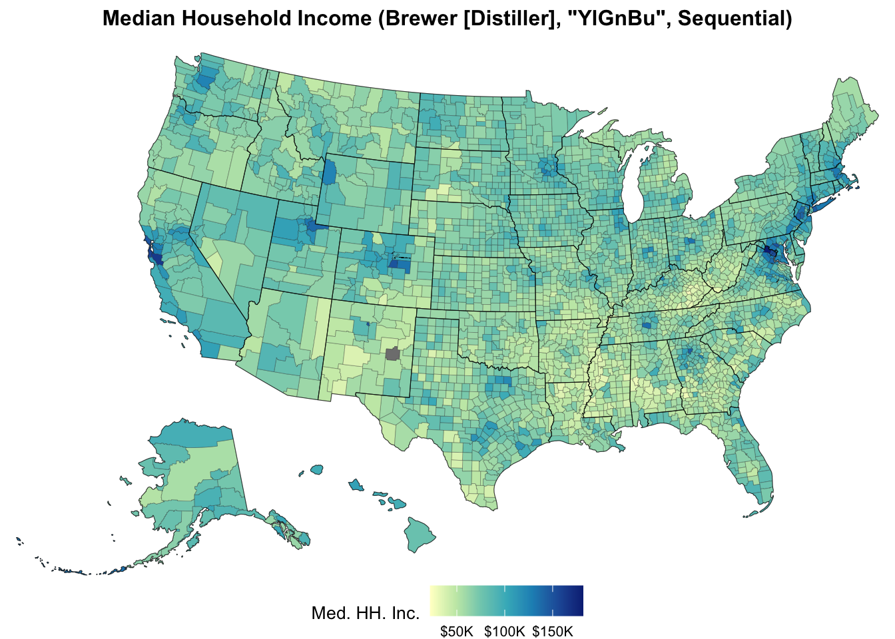
Adding state lines now helps a reader contextualize the patterns. For instance, we can observe city centers in particular states (e.g., MN, CO, TX, IN, OH, TN, GA, NJ, NY, and the DC region) where median income is higher (bluer). Glarying examples include the San Francisco and Silicon Valley region as well as the Northeast corridor stretching from DC to Massachusetts. Without inserting state boundaries on this counties map, it is more difficult to visualize the county-level variation in income.
The next two maps use alternative sequential palettes: “Viridis” and “cividis.”
countymerge |>
ggplot(aes(fill = estimate)) +
geom_sf(color = "black", linewidth=.05) +
geom_sf(data=statemap, fill=NA, linewidth=.2) +
scale_fill_viridis(labels=label_dollar(scale_cut = cut_short_scale()),
direction=-1) +
labs(fill="Med. HH. Inc.",
title = 'Median Household Income (Viridis, Sequential)\n') +
coord_sf(expand=FALSE) +
theme_void() +
theme(plot.title=element_text(face="bold", size=12, hjust=.5),
plot.caption = element_text(size=10),
legend.position = "bottom",
legend.direction = "horizontal",
legend.title = element_text(size=10),
legend.text = element_text(size = 8))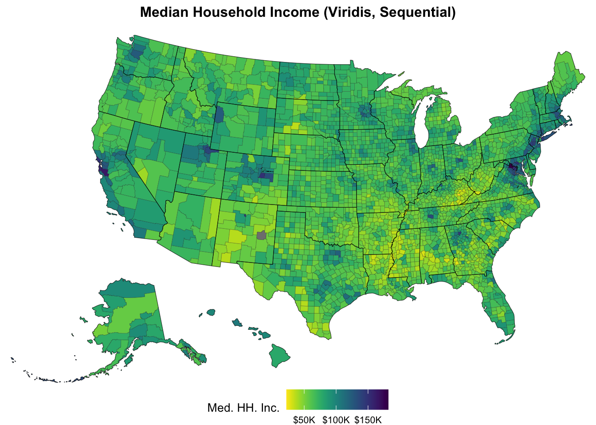
The viridis map displays some sharp contrasts. Where brewer’s “YlGnBu” palette is more pastel-like and “cool,” viridis is sharper and has more “heat” so to speak. It puts the “heat” in “heat map.” In this map, the aforementioned city centers with higher income pop out even more so than the prior map. The higher income Northeast corridor also stands out. Viridis arguable provides a sharper data visualization that makes the core geographic variation and patters more evident and interpretable.
countymerge |>
ggplot(aes(fill = estimate)) +
geom_sf(color = "black", linewidth=.05) +
geom_sf(data=statemap, fill=NA, linewidth=.2) +
scale_fill_viridis(option="cividis",
labels=label_dollar(scale_cut = cut_short_scale()),
direction=-1) +
labs(fill="Med. HH. Inc.",
title = 'Median Household Income (Viridis, "cividis", Sequential)\n') +
coord_sf(expand=FALSE) +
theme_void() +
theme(plot.title=element_text(face="bold", size=12, hjust=.5),
plot.caption = element_text(size=10),
legend.position = "bottom",
legend.direction = "horizontal",
legend.title = element_text(size=10),
legend.text = element_text(size = 8))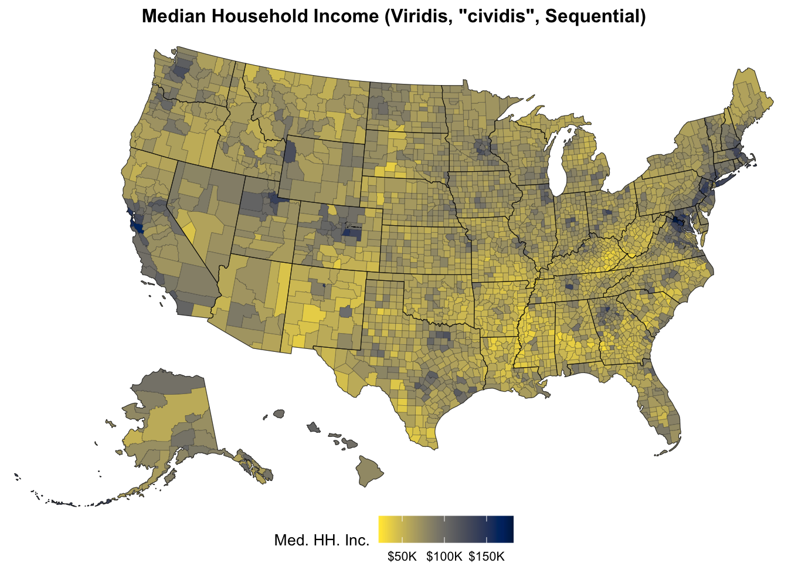
This graph above uses cividis and emphasizes mainly oranges and purples. Once again, the higher-income city centers as well as the Northeast corridor stand out in this map using this palette. The three-color viridis palette tends to provide a sharper contrast than the two-color cividis palette.
Finally, I use a diverging palette with the county-level household income data. The “middle out” variation I want to visualize is variation relative to the “average” level of income nationally. In this particular example, I use the median household income across all >3000 counties (the “median of the county-level medians”). That number in this data is $65,356. Thus, the graph shows counties with higher than average income with increasingly darker green colors. The graphs shows counties lower than average income with increasingly darker purple values.
countymerge |>
ggplot(aes(fill = estimate)) +
geom_sf(color = "black", linewidth=.05) +
geom_sf(data=statemap, fill=NA, linewidth=.2) +
scale_fill_gradient2(low = "purple4", mid = "white", high = "darkgreen",
midpoint = 65346,
labels=label_dollar(scale_cut = cut_short_scale())) +
labs(fill="Med. HH. Inc.",
title = 'Median Household Income (scale_fill_distiller2, Diverging)\n') +
coord_sf(expand=FALSE) +
theme_void() +
theme(plot.title=element_text(face="bold", size=12, hjust=.5),
plot.caption = element_text(size=10),
legend.position = "bottom",
legend.direction = "horizontal",
legend.title = element_text(size=10),
legend.text = element_text(size = 8))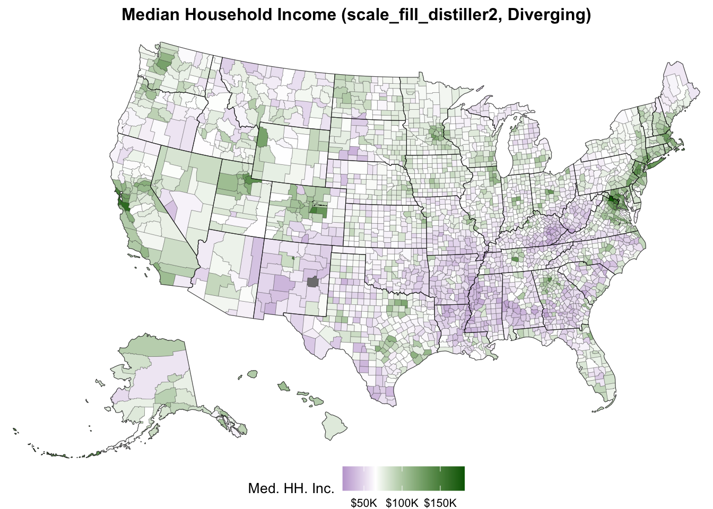
The diverging palette provides another type of visualization, in particular providing a better sense of the “uniformity” versus “polarity” in income distribution within states. For example, much of states like LA and MS are below average states, while most of New Jersey and California are above average states. A state like TN has above average income in the Nashville area but lower than average income in most other parts of the state; the same can be said about Georgia (Atlanta versus the rest of the state). The map also highlights city centers versus other parts of the state generally like what we saw in prior graphs.
The Northeast corridor from the mid-Atlantic to Maine again shows heavy pockets of green, indicative of higher than average household income. The map below zooms in on these states. For both the counties and state maps objects, I create new objects that filter on these states.
northeast <- countymerge |>
filter(STUSPS %in% c("VA", "DC", "MD", "DE", "NJ", "PA", "NY",
"CT", "RI", "VT", "NH", "ME", "MA"))
northeast_state <- statemap |>
filter(STUSPS %in% c("VA", "DC", "MD", "DE", "NJ", "PA", "NY",
"CT", "RI", "VT", "NH", "ME", "MA"))
northeast |>
ggplot(aes(fill = estimate)) +
geom_sf(color = "black", linewidth=.05) +
geom_sf(data=northeast_state, fill=NA, linewidth=.2) +
scale_fill_gradient2(low = "purple4", mid = "white", high = "springgreen4",
midpoint = 65346,
labels=label_dollar(scale_cut = cut_short_scale())) +
labs(fill="Med. HH. Inc.",
title = 'Median Household Income, Northeast (scale_fill_distiller2, Diverging)\n') +
coord_sf(expand=FALSE) +
theme_void() +
theme(plot.title=element_text(face="bold", size=12, hjust=.5),
plot.caption = element_text(size=10),
legend.position = "bottom",
legend.direction = "horizontal",
legend.title = element_text(size=10),
legend.text = element_text(size = 8))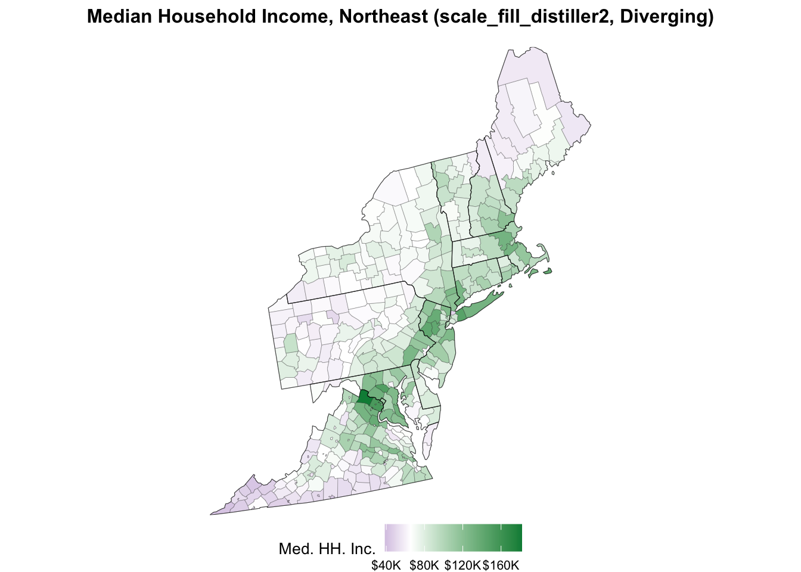
The map shows that states such as NJ, MA, MD, and CT each have counties that with above average median income levels. The New York City and DC regions have several dark green spots. The richest county in the country is Loudoun County, Virigia, just outside of DC.
5.2 World Maps with the rnaturalearth Package
The alternative to “cb” is the so-called “TIGER/line” setting, where state borders include bodies of water as well and the geographic entity will not look right. Cartographic boundaries use land mass only and remove bodies of water from geographic lines. See Walker (2023), Chapter 5, and in particular his Michigan example.↩︎
Note that there are occasions in Chapter 4 where I could have used this procedure.↩︎
The exceptions are Nebraska and Maine, who allocate some electoral votes base on the statewide winner and one electoral vote per congressional district. The maps focus on the statewide winner.↩︎
Note that upon installing
tidycensus, users will need to sign up for an API key via the following website: https://api.census.gov/data/key_signup.html. When you loadtidycensus, you will receive instructions for how to enter this API key, which you only need to do once. The whole process is entirely free of charge. The major benefit of usingtidycensusis that one can download the relevant variable and a maps object all in one fell swoop.↩︎